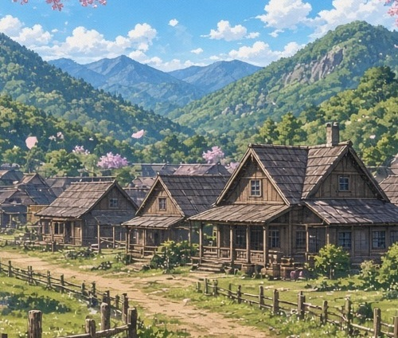

世界観＆用語集 のんびり、ほのぼの、ゆるりと
地理

カーマイン村
50軒200人ほどが住む小さな山間の村。王都から馬車で5日。高級ポーションと野菜の漬物を出荷している。
ハインリヒ領の西の果て近くにある。自然豊かで、住民はのびのび生活している。
ポーション輸出により比較的裕福で、生活には余裕がある。まさにスローライフにうってつけ。
領主館、村長宅、冒険者ギルド、教会出張所、雑貨屋、ポーション店、肉屋、宿屋、漬物屋、喫茶店三軒、皮なめし屋、いくつかの農家などがある。
王都
王国の最大都市。王宮があり政治経済の中心を担う。
ハインリヒ侯爵家のタウンハウスがある。
特に長男カインが頻繁に開かれるパーティーや晩餐会で、婚約する相手の令嬢を探す舞台になる。
食料品は農村部、地方都市を経由して輸入しているため、物価が高い。
ブルーストーン町
カーマイン村に行く途中にある、隣町。カーマイン村から狼煙(のろし)が見える。
領主はカエサル・クライド男爵。
簡易城塞都市で城門がある。バザール、教会支部、錬金術教会などを有する。
領都ハインリヒ
カントリーハウスがある。マハムたちはお呼ばれして一日滞在する。
本当の実家ではあるが、あまりここが自分の家だという実感はない。
ベドラウィン
王国第二位の規模の都市、飛空艇の運用基地があり、商工業が発達している。
外国からの輸入品も扱っており、かなり栄えている。
奥の村
カーマイン村の裏山を登った上にある廃村。かなり昔、鉱石を採掘していた。
飛空艇発着場跡もあり、鉱石を空輸していた痕跡がある。
ミラクシル村
ハインリヒ領にある温泉村。旅館があり、温泉と食事などが楽しめる。
寒い冬には温かい温泉に浸かって温まりたい。
カーマイン村と違い平野部にあり、長閑な田舎村。
スキル

スキル
【スローライフ】
マハムが5歳の鑑定の儀で取得したスキルだが、スキル本体の技能は不明。
スローライフして生活するのを支援するスキルとなっているが、隠された最強の能力……とかもなく、普通に生活する。
カーマイン村に到着すると、サブスキルが覚醒する。
事実上は「何もしない」スキルともいえる。やはりハズレスキルと言われても仕方がない側面がある。
鑑定初級
マハムが現物を見て意識することで頭の中に情報が流れ込んでくるスキル。
ただし詳細が分かるわけではなく、概要程度であまり役に立たない。
薬草やキノコなどの識別には使える。
アイテムボックス小
マハムの意思で出し入れできる異次元倉庫。
かなりの容量で、マハムが試したところ、500リットルくらいは入りそうだ。
普段は、半分を非常用水、携帯食料、おやつ、ショートソードなどを入れている。
植物・魔物図鑑知識初級
マハムが現物を見て意識することで頭の中に情報が流れ込んでくるスキル。
簡単な植物・魔物に関する情報を得られる。基本的なことのみなので、有用ではあるが使いどころが限られる。
全知識がインストールされるわけではなく、都度情報が分かるタイプ。
用語
鑑定の儀
5歳になると貴族が教会で受ける儀式により、スキルの鑑定を行う。
貴族の子のみが対象だが、スキルを授かることができるとされる。
どのようなスキルになるかは、決まっていない。
スキル
鑑定の儀を通して授かる特殊な技能をスキルと呼称している。
勇者、聖女、僧侶、剣聖、剣術、槍術、火魔法、水魔法、氷魔法、アイテムボックス、裁縫、料理、木工、金細工、農業、猟師、漁師など多岐にわたる。
平凡なものから、非常に珍しいレアスキルまで様々だが、貴族の将来を左右する。
サブスキル
スキルには派生スキルがつくことがある。
マハムがそうであるように、火魔法や水魔法などの魔法使いは、さらに個別の使える魔法がある。
スキルがなくても、適性があれば魔法は使える場合もあるので、一概にスキルという括りだけではない。
トカリアーナ様
全知全能の神。金髪碧眼の美女と言い伝えられている。神話では存在が伝えられているが、有史以来、再び顕現したことはない。
性格は温和で慈悲深いらしい。「みんなに分け与えよ」という言葉を残しており、寄付や公共の福祉を重視しているようだ。
神々
様々な神様が共存共栄している。俊足の神ラークリア。食の神エリソシア。獣人神バッカリス。幸運の神シトリアーナ。雷神トールなど。
グリーシェ
お祈り、寝る前など、神様への挨拶に用いる定型句。
日常的に気軽に使われる、よくある聖句で、教会で神父との挨拶にも使う。
冒険者ギルド
世界冒険者教会があり、それぞれの国が実体のあるギルド組織を運営している。
ほとんどの村や町にはギルドがあり、魔物の討伐や薬草などの採取物の管理をしている。
魔道コンロ
魔石か魔核を燃料とする魔道具。熱源であり上にフライパンなどを載せて温める。
比較的安価に製造され、料理店や貴族の家、領主館など裕福な家庭や専門店で多く使われる。
魔道ランプ
魔石か魔核を燃料とする魔道具。スイッチ式でオンにすると光を放つ。
比較的安価に製造され、貴族の家、領主館など裕福な家庭や専門店で多く使われる。
魔道シャワー
魔石か魔核を燃料とする魔道具。スイッチ式でオンにすると温かいお湯を直接発生させる。
実はちょっと珍しく、カーマイン村では領主館にしか設置されていないらしい。貴族の家では基本の魔道具だが一般人は使っていない程度には高価なようだ。
ポーション
水薬で、主に薬草を煮て成分を抽出することで生産される。
中級ポーションの色は青で、色が濃いほうが濃度が高く高性能。
貨幣
通貨単位は「ギリム」。10ギリム鉄貨の他、銅貨、銀貨、金貨などが使用される。
古いコインや、記念硬貨といったものも流通している。歴史的経緯により最低10ギリムからで1ギリムは使われていない。
狼煙の日
毎年春と秋の終わりの二回。王都から順番に都市や村町で狼煙を順番に伝えていく。
試験の煙は白と決まっていて、緊急時には他に黒や赤い煙などを使い分ける。冒険者ギルドの管轄。
ミスリル
非常に軽く、錆びない硬い金属。マハムはミスリルナイフを所有している。
ソードなども存在しているがとても高価。高級品の代名詞。
飛空艇
魔導機関を搭載した空を飛ぶ船。国防用にも国際貿易用にも使われている。
南国カミシール王国などから、胡椒、砂糖、チョコレートなどの希少品を空輸している。
動物＆魔物
スライム
平原などに生息。グリーンスライム、ブルースライムなどの種類がある。
スライムの魔核1個10ギリム(鉄貨1枚)。
角ウサギ
森などに生息。すばしっこい。角が売れる。肉も食料として食べられる。
弱いモンスターの代表格だが、機動力は侮れない。
ワイルドボア
牙が強力で、かなりの巨体で強い。肉が多く、最高の獲物だ。
ワイルドディア
草食性でおとなしいので危険は少ない。角が硬いので注意は必要。
肉はとても美味しく、ごちそうの一つだ。
ワイルドウルフ
肉食で集団で襲い掛かってくると危険な魔物。
肉は食用にもなる。
ワイルドホーン
大きな角を持つ大鹿。体も普通のディアよりも巨体だ。
肉は食用になり、食べ応えがありそうだ。
ワタリワイバーン
非常に危険な上位魔物。カーマイン村の上空を飛んでいくだけだが……。
マハムたちは空を飛ぶワイバーンを目撃して、右往左往する。
キラービー
大きなハチの昆虫型魔物。
蜂蜜を生産する種類で、カーマイン村の特産品の一つ。蜂蜜ジュースの材料でもある。
レインボーバード
非常に綺麗な声で鳴くモンスターの小鳥。
魔核を主食にする変わった食性で、観賞用によく飼われる。比較的おとなしい。
ランバード
陸鳥で空を飛べない代わりに速く走るモンスターの大型の鳥。 ダチョウ似ているがさらに少し大きく、少女くらいなら乗ることができる。 冒険者ギルドが運用している。
ゴブリン
弱い人型の魔物。カーマイン村の近くには出没しない。
コボルト
弱い犬人型の魔物。カーマイン村の近くには出没しない。
オーク
強い豚人型の魔物。カーマイン村の近くには出没しない。
オーガ
強い鬼人型の魔物。カーマイン村の近くには出没しない。
ドラゴン
翼と手足と尻尾を持つ、大型爬虫類風の魔物。魔物の王様であり、憧れの存在でもある。
竜ともいい、勇者による竜退治は物語の定番になっている。